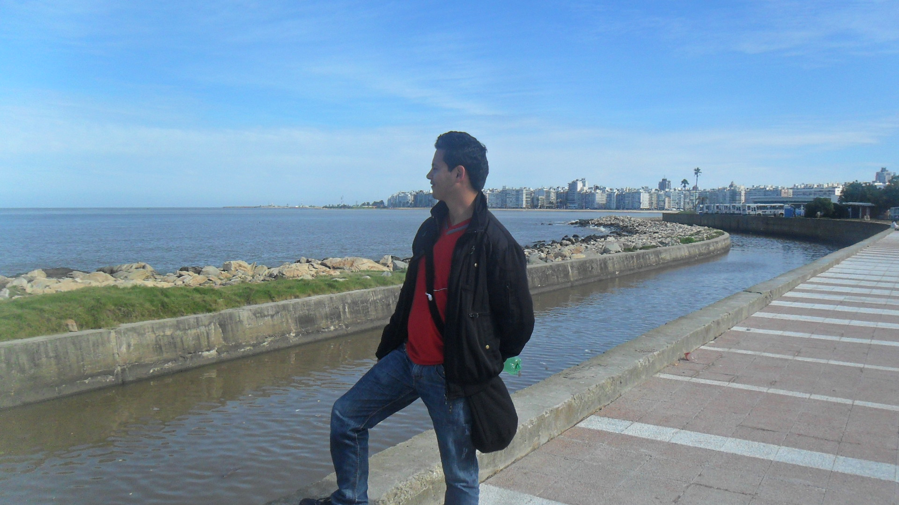

Eduard Nicolás Sarmiento Herrera

Sobre mí
Soy Tecnólogo en Administración Bancaria graduado del SENA, con dominio del idioma ingles leído y escrito de un 85%, hablado y escuchado de un 65% y progresando, conocimientos medios en lenguajes de programación VBA y Html, excelente dominio de las herramientas ofimáticas (todo el paquete Microsoft Office y paquete Apple Office) cuento con logros destacados en conocimiento profundo de los cargos desempeñados, al punto que he tenido la enorme dicha de cumplir con funciones de capacitación para personal nuevo, complementado con actitudes de liderazgo para resolver objeciones, explicar y guiar. Me he desempeñado mayormente como analista de operaciones y he obtenido algunos aportes como promotor de proyectos y mejoras en procesos, algo que suelo hacer siempre que me es posible, especialmente automatizaciones por medio del paquete de office, entre mis valores más destacados se encuentra mi alto grado de responsabilidad y fácil interpretación de las políticas organizacionales, el respeto a mis compañeros y mi insaciable necesidad de aprender constantemente. En lo personal valoro y me esfuerzo en construir un entorno con igualdad y grandes expectativas a nivel personal, suelo ser tomado como una persona con metas claras y elaboradas teniendo en cuenta el tiempo para completarlas (Corto, Mediano y Largo plazo) muy organizado y muy puntual.
Estudios
- Servicio Nacional de Aprendizaje (SENA)
Tecnólogo en Administración Bancaria y De Instituciones Financieras.
- Cursos Complementarios SENA VIRTUAL: Principios Financieros y Contables.
- Caracterización del Sector Financiero.
- Disenador Junior JavaScript, Paginas Web - HTML, CSS, Node.js, Git y GitHub.
Idiomas
- Inglés – Nivel intermedio-alto (conversaciones, lectura y escritura)
Experiencia Laboral
- Entidad: Comercializadora de Servicios Financieros
Cargo: Analista Supernumerario Libranzas
Breve descripción de las funciones: Conciliación de cuentas contables correspondientes a las cuentas de recaudo para posterior aplicación a productos del cliente, por otra parte, control, mantenimiento y seguimiento de la correcta generación y envió de extractos por productos de Libranza.
- Entidad: Scotiabank Colombia S.A. (Antes Citibank Colombia S.A.)
Cargo: Analista de operaciones.
Breve descripción de las funciones: Desempeñe diversas funciones, dado que llegue a dominar el 95% de los procesos a nivel de analista que abarcaba el área, así pues, desempeñe labores en validación, lectura y verificación de solicitudes vía e-mail recibidas en el área, con posterior canalización a los distintos analistas para su ejecución y respuesta complementando todo esto con un amplio soporte al cliente interno, profundizando o aclarando temas diversos sobre las solicitudes recibidas. Pasando por otro de los procesos desempeñe y apoye en aplicación de pagos y reversos, ajuste y ejecuciones de rediferidos a loans, extrafinanciaciones en productos TC, ajustes en planes de pagos, ajuste de intereses mora o corrientes, al igual que desempeñe realizando ajuste, seguimiento y control a todo tipo de cambios y actualizaciones de datos demográficos de los clientes externos, de otra parte tuve un desempeño amplio soportando áreas internas en la ejecución y solución de PQRS, derechos de petición, consultas SARLAFT por alertas en transacciones sospechosas, ante entes regulatorios y listas inhibitorias por ultimo y muy importante tuve un destacable aporte en el desarrollo y elaboración de herramientas de automatización, en lenguaje VBA enfocadas a contribuir positivamente en el control de los proceso, la mitigación del riesgo operativo, la mejora de la organización del área y del tiempo de ejecución de los distintos procesos, así como la posibilidad de generar indicadores de gestión del área y todo el equipo de trabajo.
Hobbies
Ciertamente soy de gustos diversos, pero entre mis pasatiempos mas destacados, tiene un lugar especial para la galeria, la lectura, estudiar (como tal el aprender de historia y tecnologia) y por supuesto, escuchar musica, amante del Rock pero furtivo consumidor de musica novedosa; aún así tambien entran entre mis gustos, ver películas, series, jugar video juegos, viajar, hacer ejercício, bailar, tocar la guitarra, cuidar de animales y compartir con la familia, secretamente me ha estado creciendo un cierto placer al cocinar, sin embargo, debo admitir que esto no es que se me de justamente bien.
Entre mis favoritos
Dare nombres e indicare de que va el recomendado entre parentesis:
- Juego de Tronos (Serie y libros, los amo, me encanta su historia y todo su universo.)
- DC fanatico de los superheroes de ambos universos, pero mi favorito es Superman (libros, series, peliculas, etc.)
- Psicología (todo lo que sea)
- Geopolitica (placeres culposos)
- Historia en general (una droga con efectos secundarios beneficiosos)
- No mires arriba (Pelicula)
- Peacemaker (serie)
- Vikings (serie)
- Pink Floyd, Reggae, Michael Jackson, Blink 182 y muchos muchisimos mas.
Expectativas
Mis expectativas, sobre este curso y las razones que tengo para querer estudiar y aprender tanto como sea posible, sobre este mundo, es porque pienso que es muy versatil este mundo, los alcances a los que se pueden llegar son realmente bastos, casi sin limitaciones en mi perspectiva, es mas probable que te falte creatividad, antes que encontrar alguna limitante, por otro lado me encanta la tecnologia y todo (o casi todo)lo que de ella devien, por todas estas razones, exhibidas de manera general, encuentro todo el gusto en querer aprender a programar (tambien tengo proyectos personales con enfoque educativo que planeo poner a andar en su determinado momento.)